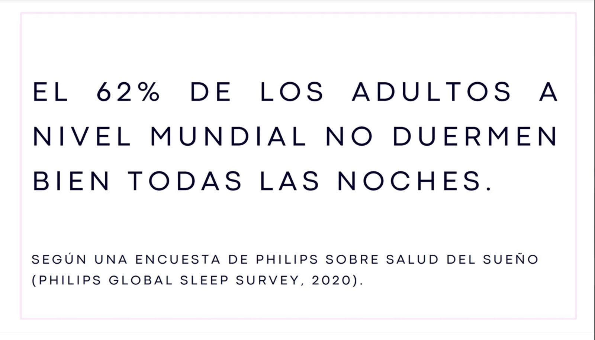
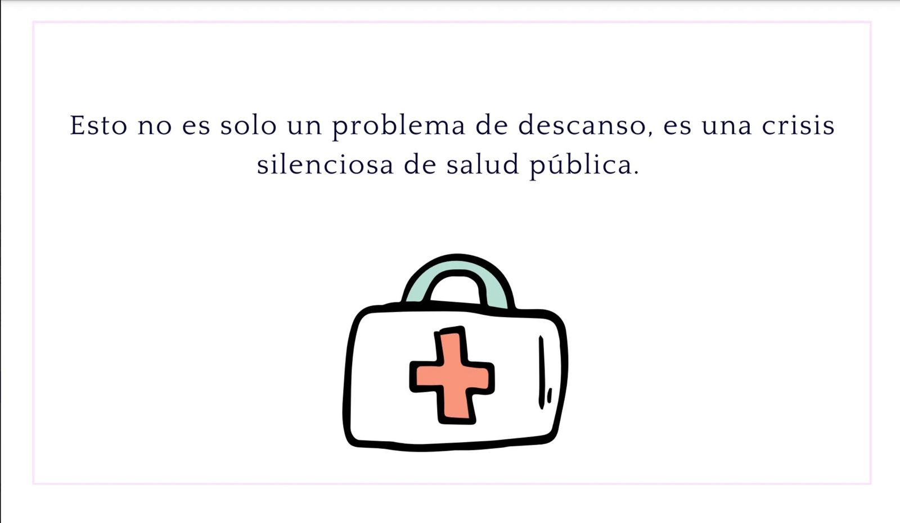
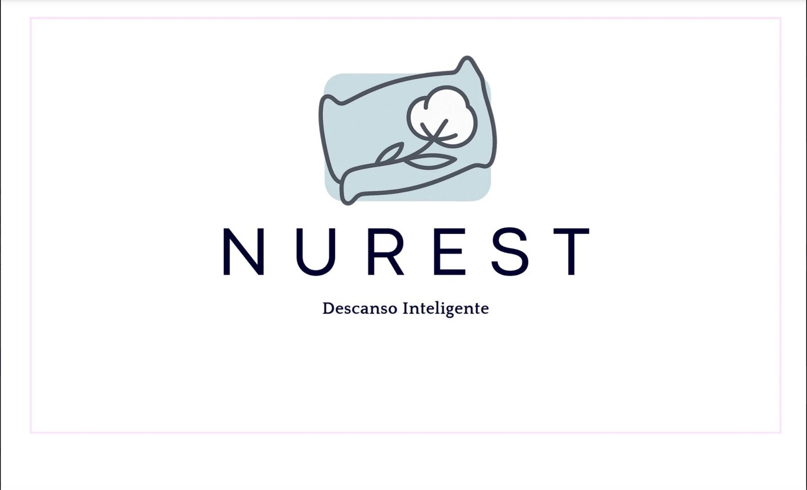
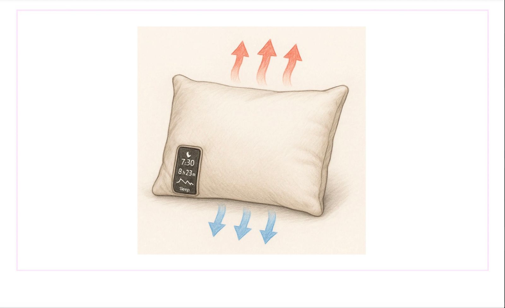
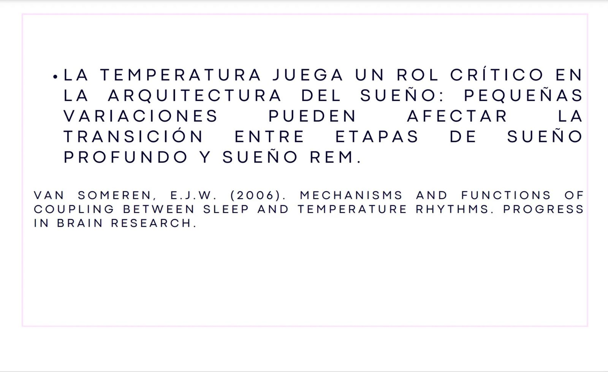
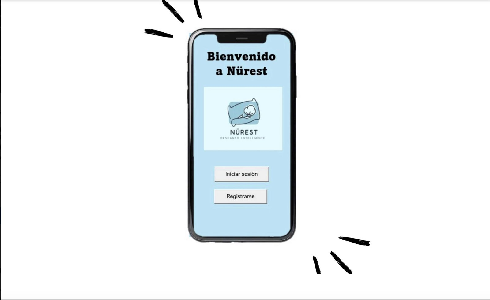
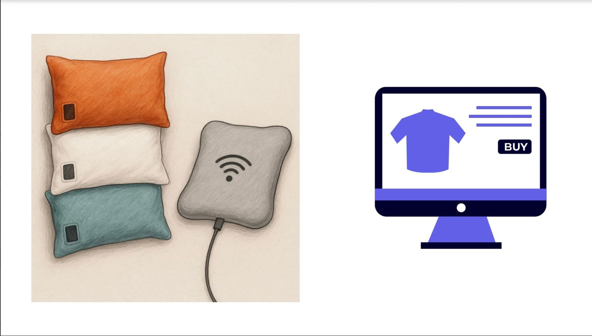
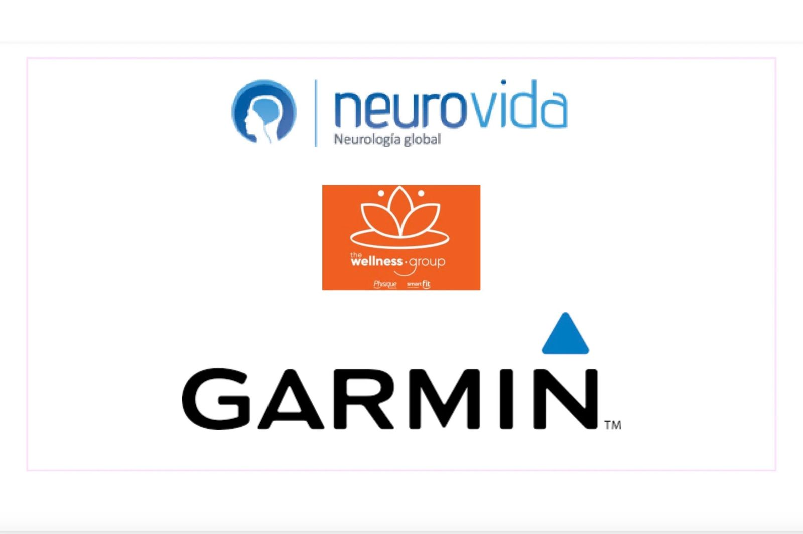
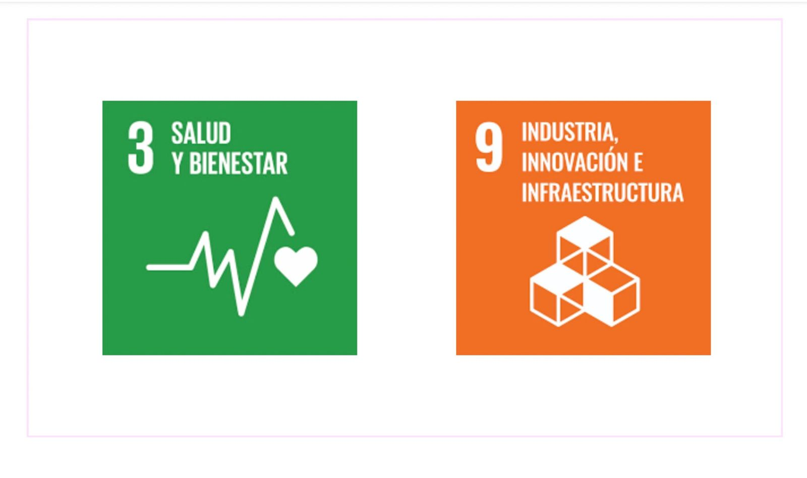
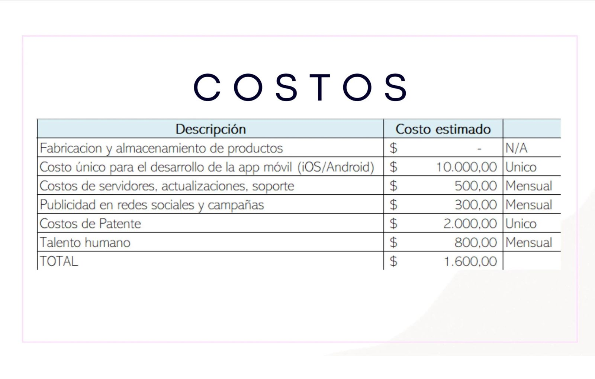
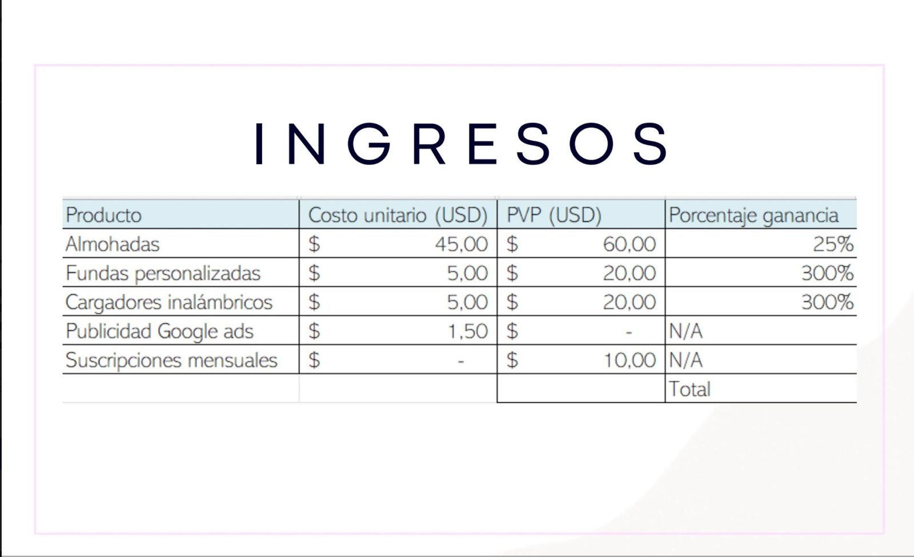
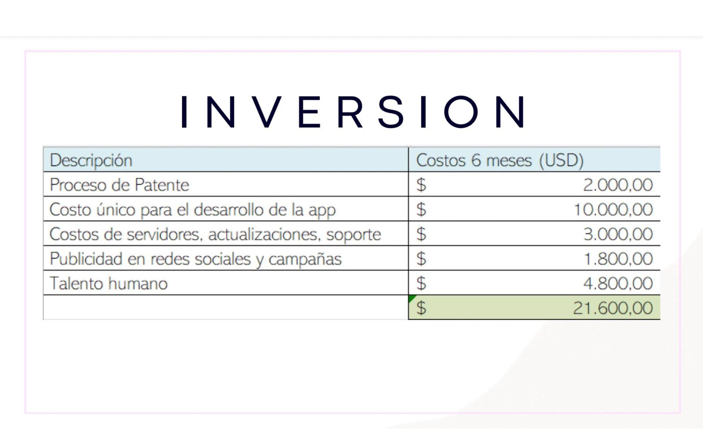
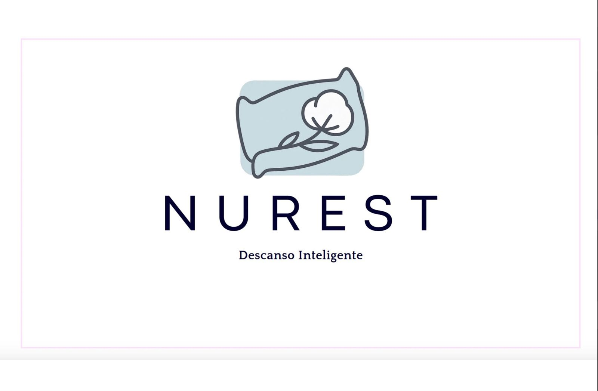
El proyecto Nurest es un emprendimiento que tiene como objetivo revolucionar el descanso de las personas a través de una almohada inteligente diseñada para mejorar la calidad del sueño. La iniciativa surge al identificar un problema común entre profesionales y estudiantes: la falta de descanso adecuado causada por almohadas poco personalizadas, incómodas o que no se adaptan a las necesidades de cada persona.
Para solucionar esto, Nurest propone una almohada capaz de adaptarse a los hábitos y preferencias del usuario, ayudando a regular sus horas de sueño y mejorar su descanso. Además, el producto cuenta con su propia aplicación móvil, que se conecta con la almohada para monitorear el sueño, ajustar configuraciones y ofrecer recomendaciones personalizadas. De esta manera, Nurest combina tecnología, bienestar y personalización para optimizar el descanso y contribuir a una mejor salud y rendimiento en la vida diaria.